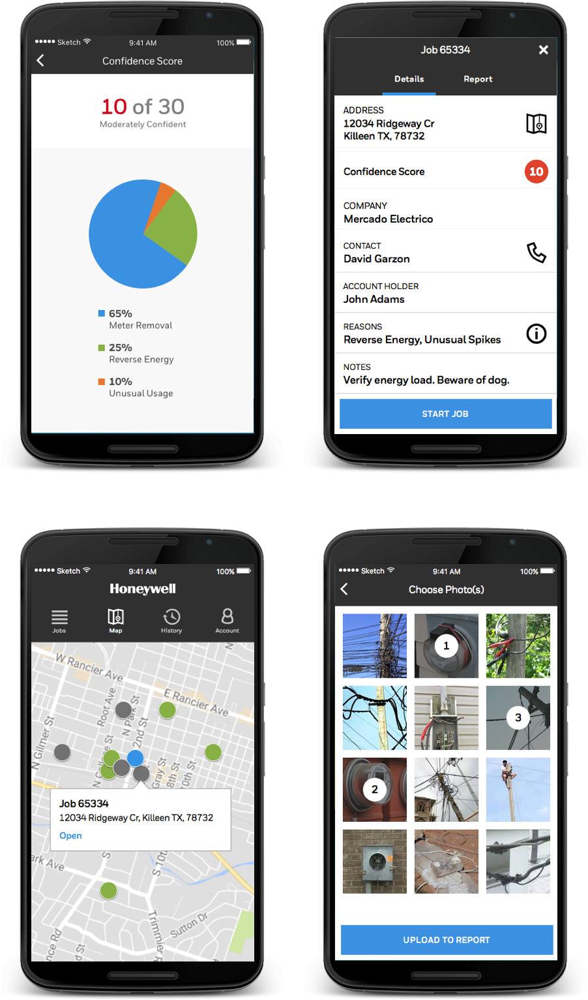

THE PROBLEM
Utility companies around the world lose millions of dollars yearly to energy theft. Field agents who are in charge of investigating and documenting the theft (so that it can be stopped) have challenges around quickly getting evidential information for many different sites and transmitting it back to the utilities. In many cases, they are risking their safety and lives to do so. Because there are not many dedicated tools specific for their jobs, they relied on a variety of methods with varying reliability and efficacy.
Although Honeywell had many established customers in the Utilities industry, their user research revealed that there were additional customer needs for these Field Agents which were not yet being by their current solutions, and so this uncovered a business opportunity which could help address their specific needs.
MY ROLE
I conducted stakeholder interviews with utiliity experts in order to gather business needs and to understand the workflows of the different work roles across their customers. Using these findings, I created user flows, wireframes and final visual designs which could be validated with customers before development started.
High Level User Flows
We mapped the high level user flows to understand the complexities of how different users' roles were interconnected.
Screen Flow and Contextual States Inventory
To understand the full scope of the user experience and how the different user flows interacted, I created a logical screen flow and contextual state inventory.

Clickable Prototype and Protocol Questions
After mapping out the main screen flows, I created a clickable prototype in Invision which could be leveraged for user testing and also work as a reference for the development teams on how the app would function. I also created a series of protocol questions which could be taken into the field in order to validate that the feature set we had created would address the Field Agents' needs and that it would fit their mental models and diverse workflows.


Neutral Map Style Design
In order to have a map style that would not detract from the interaction elements of the map, I designed a neutral map style and worked with the development teams to get it implemented.

Final Visual Designs